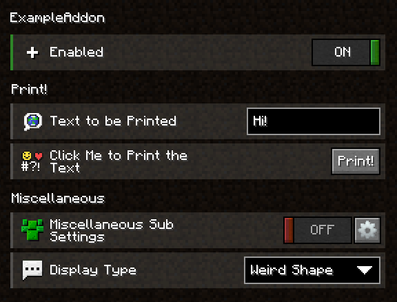
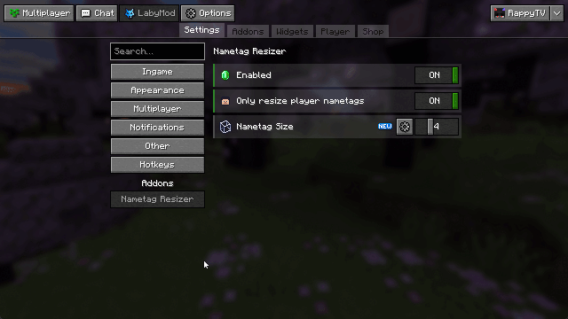

Creating a Configuration
From using our predefined setting widgets over creating your own, to a few things that didn't fit in with the rest. This page will show you everything there is to know about our configuration system.
Create a Basic Configuration
You can create your configuration by creating a new class and inheriting AddonConfig. This superclass requires you to implement the enabled method, as we want to allow servers to disable every addon they want.
The only thing you always need to keep in mind while creating a configuration besides the type you need to inherit is that you need to use the ConfigProperty type for your settings, but just for specific types that you might want to use. More on which types you can use by default here. For any other types, use the type itself without declaring it as an argument on ConfigProperty.
To create a setting that represents if your addon is enabled or not, you need to create a new field with the type ConfigProperty. Now add the type of your setting, in this case, Boolean as boolean. Now instantiate this property by declaring a new ConfigProperty with the default value as the argument, well use true as the default value.
The result would look like this ConfigProperty<Boolean> enabled = new ConfigProperty<>(true). Now, if we want to use this property in an event, we'll get the property (preferably by its getter) and call get(). This will get us the value of the property.
Setting types
You can only use various types for your ConfigProperty by default.
The current valid types are:
- String
- Character
- Boolean
- Integer
- Long
- Double
- Float
- Short
- Byte
- any Enum
- Key
- MouseButton
- ResourceLocation
- Color (
net.labymod.api.util)
Using Predefined Setting Widgets
The following content lists all of our Setting Widgets that will be served by using the Addon API, with possible arguments (brackets surround optional arguments), compatible types, and a short description that you can create via an annotation:
Annotation: SwitchSetting
Arguments: none
Compatible Type: Boolean
Description: Allows the player to enable or disable an on/off switch.
Slider Widget
Annotation: SliderSetting
Arguments: min - smallest value possible, max - biggest value possible, (steps - the amount of how much the value will increase/decrease on each move - default is 1)
Compatible Types: Integer, Float, Double, Short, Byte, Long
Description: Allows the player to select a number in a specific range on a slider
Text Field Widget
Annotation: TextFieldSetting
Arguments: (maxLength - the maximal length of the string entered)
Compatible Type: String
Description: Allows the player to freely type any string
Key Bind Widget
Annotation: KeyBindSetting
Arguments: (acceptMouseButtons - whether the user should be able to select mouse buttons - default is false)
Compatible Type: Key
Description: Allows the player to select a mouse or keyboard button. Most commonly used for shortcuts
Multi Key Bind Widget
Annotation: MultiKeyBindSetting
Arguments: none
Compatible Type: Key[]
Description: Allows the player to select multiple keyboard buttons. Most commonly used for shortcuts
Color Picker Widget
Annotation: ColorPickerSetting
Arguments: (alpha - whether the user should be able to change the transparency - default is false, chroma - whether the user should be able to add the rgb/chroma effect to the color - default is false, chromaSpeed - whether the user should be able to change the chroma speed value of the color - default is true)
Compatible Type: Integer
Description: Allows the player to select a color from a hex color picker
Dropdown Widget
Annotation: DropdownSetting
Arguments: none
Compatible Types: any enum
Description: Displays an enum as a dropdown menu and lets the player choose an option
Button Widget
Annotation: ButtonSetting
Arguments: none
Compatible Types: any public void method annotated with @MethodOrder and with a Setting object as the only parameter.
Description: Executes a method with custom code when clicked
Activity Widget
Annotation: ActivitySetting
Arguments: none
Compatible Types: any public method that returns an Activity, not ConfigProperty
Description: Opens an activity in a new window
Advanced Selection Widget
Annotation: AdvancedSelectionSetting
Arguments: none
Compatible Types: any of the default types mentioned above
Description: A horizonal field list where the user can select one option. This is used for the theme selector for example.
Tag Input Widget
Annotation: TagInputSetting
Arguments: none
Compatible Types: TagCollection
Description: Basically acts as an array of strings where the player can add and remove strings as he wishes
Item Stack Widget
Annotation: ItemStackSetting
Arguments: none
Compatible Types: ItemStack, ItemData
Description: Allows the player to select the item stack which they're holding ingame
File Chooser Widget
Annotation: FileChooserSetting
Arguments: (extensions: an array of allowed file extensions)
Compatible Types: Path
Description: Allows the player to select a path to a file or a directory
Further Customize the Settings
In addition to using predefined widgets for your settings, you also have a few other options to customize them.
The following points are not very precisely explained, but you can see everything from the following subsections and most of the subsections before in this section.
Create Sections
You can create sections in your settings; you just have to add the annotation @SettingSection above the first field that you want to have in said section. Now all you have to do is set the identifier as the annotation's value parameter and add it to your internationalization file. You can also center the section title by passing the center annotation parameter as true.
Create Sub Settings
If you want more structure in your settings but don't want to use Sections, you can create sub-settings that can be accessed via a button. Just create a new class, and let it inherit from Config. Add a field with the same type in your configuration (just the type, not a ConfigProperty) and create a new instance of said class. You might have noticed that you don't have to use the AddonConfig superclass for sub-settings. The AddonConfig class is required for your main configuration but not for sub-settings.
If you want to display more than just the advanced button (the button that lets you access the sub-settings), add the @ShowSettingInParent annotation to the most important switch in your sub-settings.
Use Icons for Settings
To display icons in front of your settings, you'll need to declare a sprite texture with the @SpriteTexture annotation. Set the name of your file as the value of the annotation (the base path is assets/NAMESPACE/themes/THEME/textures/sprite, while the namespace is the namespace you set in your build.gradle.kts and the theme to the current theme. If you want your icons to be visible in all themes, put the texture in the vanilla theme). More on sprite textures here.
Example of the Previous Sections
These are some example files showing a few of the functions mentioned before.
@ConfigName("settings")
@SpriteTexture("example_sprite.png")
public class ExampleConfiguration extends AddonConfig {
@SpriteSlot(x = 1, y = 1)
@SwitchSetting
private ConfigProperty<Boolean> enabled = new ConfigProperty<>(true);
@SettingSection("print")
@SpriteSlot(x = 6)
@TextFieldSetting
private ConfigProperty<String> text = new ConfigProperty<>("Hello World!");
@SettingSection("miscellaneous")
@SpriteSlot(x = 1, y = 3)
private ExampleSubSettings subSettings = new ExampleSubSettings();
@SpriteSlot(y = 3)
@DropdownSetting
private ConfigProperty<ExampleEnum> type = new ConfigProperty<>(ExampleEnum.SCALENE_TRIANGLE);
@MethodOrder(after = "text")
@SpriteSlot(x = 2, y = 6)
@ButtonSetting
public void print(Setting setting) {
Notification.Builder builder = Notification.builder()
.title(Component.text("INFO"))
.text(Component.text(setting.getId() + " was clicked! " + this.text))
.type(Type.SYSTEM);
Laby.labyAPI().notificationController().push(builder.build());
}
@Override
public ConfigProperty<Boolean> enabled() {
return this.enabled;
}
}
public class ExampleSubSettings extends Config {
@ShowSettingInParent
@SpriteSlot(x = 7)
@SwitchSetting
private ConfigProperty<Boolean> enabled = new ConfigProperty<>(true);
@SpriteSlot(x = 1, y = 6)
@ColorPickerSetting
private ConfigProperty<Integer> labyModColor = new ConfigProperty<>(
new Color(10, 85, 165).getRGB());
@SpriteSlot(x = 2)
@KeyBindSetting
private ConfigProperty<Key> keyBind = new ConfigProperty<>(Key.F);
}
public enum ExampleEnum {
HEART, CIRCLE, RECTANGLE, TRIANGLE, SCALENE_TRIANGLE;
}
{
"example": {
"settings": {
"name": "ExampleAddon",
"enabled": {
"name": "Enabled"
},
"text": {
"name": "Text to be Printed"
},
"print": {
"name": "Click Me to Print the Text",
"text": "Print!"
},
"subSettings": {
"name": "Miscellaneous Sub Settings",
"labyModColor": {
"name": "The LabyMod Color"
},
"keyBind": {
"name": "Key Bind"
}
},
"type": {
"name": "Display Type",
"entries": {
"heart": "Heart",
"circle": "Circle",
"rectangle": "Rectangle",
"triangle": "Triangle",
"scaleneTriangle": "Weird Shape"
}
},
"header": {
"print": {
"name": "Print!"
},
"miscellaneous": {
"name": "Miscellaneous"
}
}
}
}
}

Mark config options as introduced in a specific update
Sometimes you add a new setting to your config and want to highlight it to your users as part of an update. To achieve this, LabyMod provides revisions. A revision acts like a milestone: it documents an update with a version and associates it with a release date. Config options can then be annotated with this revision to automatically display a “new” badge for a limited time.
Create and register a revision
Let’s say you’re releasing an update for your addon with the version 1.0.1.
Before your configuration is loaded, you need to register a revision so it can be used in your config.
- Override the
preConfigurationLoadmethod in yourLabyAddonclass. - Inside it, register a new revision via the
RevisionRegistry, accessible throughLaby.references().revisionRegistry(). - Use a
SimpleRevisionobject to register:- Namespace: your addon namespace (
"example"in this guide). - Version: a
SemanticVersionobject, e.g.new SemanticVersion("1.0.1"). - Date: release date in
YYYY-MM-DDformat. This controls how long the “new” badge is displayed (exactly 12 days).
- Namespace: your addon namespace (
Associate a setting with a revision
Once a revision is registered, you can immediately use it in your config.
To do this, annotate a config option with the @IntroducedIn annotation.
- The
namespaceparameter should match the namespace you registered. - The
valueparameter should match the revision’s version string.
And that’s it - LabyMod will now automatically mark this setting as new for your users.
Example of applying a revision
public class ExampleAddon extends LabyAddon<ExampleConfiguration> {
@Override
protected void preConfigurationLoad() {
Laby.references().revisionRegistry().register(new SimpleRevision(
"example",
new SemanticVersion("1.0.1"),
"2025-10-06"
));
}
}
@ConfigName("settings")
public class ExampleConfiguration extends AddonConfig {
@SwitchSetting
private final ConfigProperty<Boolean> enabled = new ConfigProperty<>(true);
@TextFieldSetting
private final ConfigProperty<String> oldConfigOption = new ConfigProperty<>("");
@IntroducedIn(namespace = "example", value = "1.0.1")
@SliderSetting(min = 1, max = 10)
private final ConfigProperty<Integer> brandNewConfigOption = new ConfigProperty<>(7);
public ConfigProperty<Boolean> enabled() {
return this.enabled;
}
}

Config Versioning
If you want to push an update for your addon which breaks existing configs it would be a great idea to write a little config migrator class which converts the old JSON file to your new config format.
The first step would be increasing the current version of your addon config by one. You do so by overriding the AddonConfig#getConfigVersion method in your config implementation.
@Override
public int getConfigVersion() {
return 2;
}
public class ConfigVersionListener {
@Subscribe
public void onConfigVersionUpdate(ConfigurationVersionUpdateEvent event) {
// Get the config class so you can differantiate which config is being updated
Class<? extends Config> configClass = event.getConfigClass();
// This is the version which the old config is in
int usedVersion = event.getUsedVersion();
// Check if it's really your config
if (configClass == YourConfigClass.class) {
if (usedVersion == 1) {
// The current config JSON object
JsonObject config = event.getJsonObject();
// Keep the value of a renamed ConfigProperty
if(config.has("oldConfigOptionName")) {
// You'd have to adapt the #getAsString to your property type of course
config.set("newConfigOptionName", config.get("oldConfigOptionName").getAsString());
}
// Add default values to a newly created array
JsonArray myNewArrayProperty = new JsonArray();
// JsonArray#add(String) can't be used unfortunately because the method does not exist in the gson version used in labymod 1.8
myNewArrayProperty.add(new JsonPrimitive("array value number 1"));
myNewArrayProperty.add(new JsonPrimitive("array value number 2"));
myNewArrayProperty.add(new JsonPrimitive("array value number 3"));
config.add("myNewArrayProperty", myNewArrayProperty);
/*
You don't really have to remove old JSON values of removed ConfigProperties
as they're removed when the config is being loaded anyway
*/
// Finally set the modified config object
event.setJsonObject(config);
} else if (usedVersion == 2) {
// If the addon's config is already on version 2 and you need to migrate it to version 3 for example
}
}
}
}